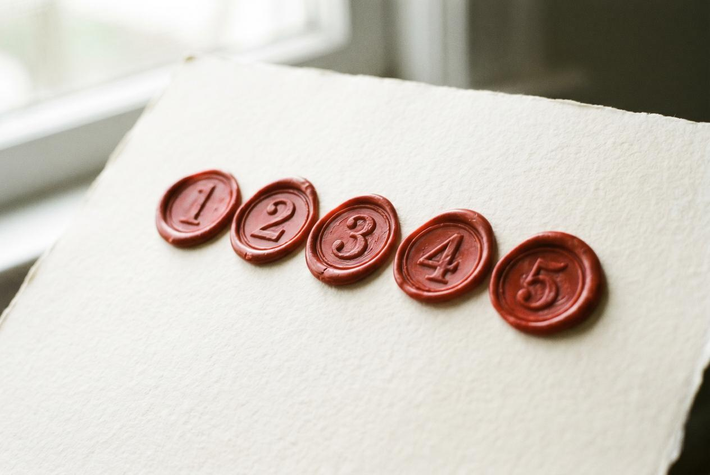

Self-publishing has gotten democratic — anyone with a manuscript and $99 can put a book on Amazon — but the marketing has gotten harder. There are 8,000+ new books published on KDP every day. Algorithm visibility is a finite resource. And the marketing advice circulating in author Facebook groups is mostly six years out of date.
This article is the five mistakes that quietly kill indie book sales right now, in 2026. Each comes with the actual fix — not the "build a platform" wave-of-the-hand version. If you've launched a book and the sales aren't moving, one of these is probably what's wrong.
Mistake #1: The Cold Launch
The single biggest mistake indie authors make: launch day arrives and nobody knows the book exists yet.
No pre-orders. No email list seeing the cover three weeks early. No press primed to write about it that week. The book drops into a void, and Amazon's algorithm — which decides whether to show your book to readers — sees a flat sales line and concludes: this isn't moving, deprioritize it.
BookBaby's 2026 self-publishing report makes the same point: algorithms reward pre-launch momentum, and books that launch cold rarely recover. The first 72 hours decide more about your book's trajectory than the next year.
The fix
If you haven't launched yet:
- Open pre-orders 4–8 weeks early to build a backlog of buys that all hit on launch day
- Build an ARC list of 30–60 readers who'll leave honest reviews on launch week
- Schedule press to land in launch week — see Mistake #5 for how this works at indie author price points
- Plan email sequence so your existing list (even if it's 50 people) sees the launch on the same day, in the same hour
If you've already launched cold:
- Pick a date 60 days out
- Plan a "second launch" — book a press feature for that week, push your email list to buy on the same day, run a discount-pricing window
- Treat it as launch 2.0. This works.
Mistake #2: Random Facebook Ads to a Cold Page

Here's the script almost every indie author follows: book launches, sales are low, they hear "you have to run Facebook ads," they put $200 on a campaign targeting "people who like books," and three days later they have $200 less and zero new sales.
The problem isn't Facebook. The problem is running ads to an Amazon page that doesn't convert.
Facebook ads work when the click-through page (your Amazon listing) is already converting at 8–15% — meaning of every 100 readers who click, 8–15 buy. If your Amazon page converts at 2% (which is common for indie books with weak covers, generic blurbs, and zero reviews), Facebook ads just amplify your weak conversion. Spending more doesn't fix the underlying problem; it makes the bleeding faster.
The fix
Before spending a dollar on paid ads, get your Amazon page to convert. The fix order:
- Cover — must communicate genre in 0.3 seconds at thumbnail size. Hire a genre-specialist designer ($300–$800).
- Blurb — must be a hook (promise of emotional experience), not a summary. Hire a blurb-writer if you can't get there yourself ($150–$400).
- Reviews — get to 10+ before paid ads. ARC programs work even after launch.
- A+ Content — KDP lets you add visual content below the fold. Most authors skip this; it lifts conversion 5–15%.
- Categories and keywords — use Publisher Rocket or Kindlepreneur's category guide to pick three deep niche categories.
After all five are done, then run Facebook ads. The ads will perform 3–10x better than they would have on the cold page. Same $200 spend, dramatically different return.
Mistake #3: Trying to Be Active on Every Social Platform
Most indie author advice says: "be on Instagram, TikTok, Twitter, Threads, Facebook, BookTok, Pinterest, YouTube." So authors create accounts on all of them, post sporadically for two weeks, exhaust themselves, and conclude that "social media doesn't work for indie authors."
The conclusion is wrong, but the experience is real. Multi-platform consistency is impossible for any author who's also writing books. Authors who succeed on social pick one platform, post 4–7 times a week for at least 6 months, and ignore the others.
IngramSpark's marketing analysis makes the same point: authors spread thin across platforms get nothing; authors who go deep on one platform sometimes break through.
The fix
Pick one platform based on your book's genre:
- Romance, romantasy, YA, BookTok-friendly fiction → TikTok / BookTok
- Literary, memoir, non-fiction → Instagram or Threads (Threads is easier to grow on right now, less saturated)
- Business, self-help, productivity → LinkedIn or Twitter/X
- Cozy mystery, historical fiction, lifestyle → Pinterest (massively underused for books)
Commit for 6 months minimum. Post 4–7 times a week. Ignore the others. You can always add platforms later once you've built one audience.
If you don't have time for any of this — and honestly most authors don't — skip social entirely and put the time into Mistake #5's fix instead.
Mistake #4: Wasting Money on Wire-Service Press Releases
This one keeps showing up in author Facebook groups. "I paid $497 for a press release that got published on 200+ news sites!" Then nothing happens. No sales bump. No real press coverage. Just a screenshot collection of placements on syndication clones that no human reads.
We covered this in detail in Press Release vs Editorial Article — Which Actually Sells Books, but the short version: wire-service press releases (PR Newswire, EIN, GlobeNewswire) distribute boilerplate corporate-style announcements to syndication networks of low-traffic shadow sites. Google de-indexes most placements within 90 days. Real journalists don't read mass-distributed wire releases for book content. The screenshots look impressive but don't drive readers.
The fix
Wire-service press release distribution is rarely worth it for indie authors. The exceptions are narrow (you need a few low-DA backlinks for SEO and don't mind they have no readers, or you need a "professional-looking" media kit). For everything else — driving real readers, building authority, creating quotable coverage — wire releases do nothing.
Spend the $300–$2,000 you'd put into wire distribution on one real editorial placement instead. The cost is similar; the result is structurally different.
Mistake #5: Skipping Real Press Because "It's Too Expensive"
This is the mistake costing self-published authors the most money — paradoxically, by spending less.
The conventional wisdom: "real magazine press is for traditionally-published authors with publicist budgets. Indie authors can't afford it." Authors hear this, internalize it, and don't pursue magazine features at all. They run Facebook ads, post on social, hope for organic discovery, and spend years frustrated.
But the math has changed. Real magazine press for indie authors went from "impossible" to "expensive" to "fixed-price contractual" over the last few years. The pay-for-placement model — where you buy a specific named placement at a known price with money-back guarantee — didn't exist for indie authors a decade ago. It does now.
What real press actually does for an indie book
Real magazine features compound with every other marketing fix:
- Drive traffic to your Amazon page (and Amazon's algorithm rewards traffic + conversion)
- Create permanent backlinks that improve your author site's domain authority
- Generate social proof — "as featured in Closer Weekly" beats "self-published" every time on book back covers, ads, and email signature
- Persist for years — a feature article URL stays live and indexable, surfacing in author-name searches forever
- Generate quotable copy for everything else — Amazon A+ Content, retailer descriptions, paid ad creative
A single real magazine feature does more for an indie book than $5K of Facebook ads. Most authors don't believe this until they see it.
The fix
Set aside a press budget at the same priority as cover and blurb. Real numbers:
- $97 — VUGA Trial: one editorial article in the network, $97 credited toward any upgrade within 30 days
- $997 — VUGA Spark: 10 placements across the 104-outlet VUGA Enterprises network
- $7,997 — VUGA Bestseller: adds Closer Weekly + In Touch Weekly + Star Magazine
- $14,997 — VUGA Authority: all 5 major celebrity magazines (adds OK! and Hollywood Life)
Every placement is contractually guaranteed. If we don't deliver, full money-back. The cost-per-placement is dramatically lower than traditional publicists because you're not paying for hours and uncertainty — you're paying for the placement.
For most indie authors with under $25K marketing budget, this is the highest-ROI press option that exists.
The Honest Order of Operations
If you're an indie author trying to figure out what to fix, here's the order:
- Cover — converts the Amazon click into a buyer
- Blurb — hooks the reader who clicked
- Categories/keywords — gets you in front of the right readers
- Reviews to 10+ — Amazon's algorithm starts paying attention
- Real press — drives traffic + creates social proof + lasts forever
- Paid ads — amplifies a now-converting page, not a broken one
- One social platform — long-term audience-building, 6+ months minimum
The mistakes above all map to skipping or inverting this order. Authors who run Facebook ads first (instead of fixing conversion first) waste money. Authors who skip press because "too expensive" miss the highest-leverage fix in the stack. Authors who try to be on every social platform never go deep enough on any of them to break through.
What to Do This Week
If you're 60+ days post-launch with low sales:
- Audit your cover honestly (or ask 3 strangers what genre your book is, judging by the thumbnail)
- Rewrite your blurb as a hook, not a summary
- Run one real press placement to drive traffic — start with the $97 trial if you want to see the format before committing more
The book isn't doomed. Most indie books that "didn't sell" had fixable discovery-layer problems. Fix them in the right order and the math changes.
Sources for this article:
- BookBaby, "The Year in Book Selling"
- Kindlepreneur, "How to Choose the Best Kindle eBook KDP Category"
- IngramSpark, "Top 10 Book Marketing Mistakes Self-Published Authors Make"
- The Table Read Magazine, "The 7 Biggest Book Publishing Mistakes Indie Authors Still Make"
- Sprig Publishing, "10 Self-Publishing Mistakes to Avoid"
Image generation prompts (Gemini Nano Banana Pro)
Hero image (1600×900, JPG):
An editorial overhead shot: a wooden author's desk strewn with crossed-out marketing plans on paper, a closed laptop, an empty coffee cup, a half-eaten croissant, and a single book lying face-down. A red marker has crossed out items on a notepad reading "Facebook ads", "Instagram", "TikTok", "press release". A pen rests on the notepad. Warm afternoon light from the side. Editorial photojournalism style. Color palette: warm wood, cream paper, red ink. Ultra-realistic, 16:9 aspect ratio. --ar 16:9 --style raw
Inline image 1 — five circles (1200×800):
A minimalist editorial photograph of five red wax-seal stamps in a row on cream paper, each stamped with a different number (1 through 5). The stamps are slightly tilted and overlapping. Soft natural light. Editorial design photography. --ar 3:2
Inline image 2 — bookstore shelf vs Amazon (1600×900):
Split-screen photograph. LEFT half: a clean physical bookstore shelf with one book pulled forward, well-lit, eye-catching. RIGHT half: a chaotic blurred Amazon search results page with hundreds of tiny thumbnails, motion blur. The left side is sharp, the right side blurred. Color palette: warm wood on left, cool blue digital glow on right. Conceptual editorial photography. --ar 16:9 --style raw